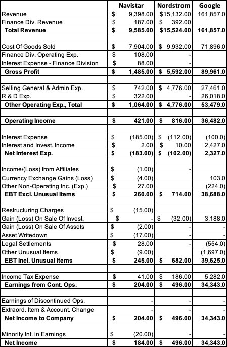

← 会计101 · 分讲阅读 · 站主随笔
NYU Stern · Damodaran《Accounting 101》· 第 2A 讲
本讲视频：Income Statement Comparisons（YouTube，约 12–20 分钟）· 原始幻灯：session2A.pdf
把七家公司的利润表并排放在一起看，你会看到一个容易被忘掉的常识：利润表长得都一样，但每家公司塞进去的东西完全不一样。Peloton 的净亏损和 Coca-Cola 的净利润都是同一行数字，意义却天差地别；Total 的利润几乎全在上游，HSBC 的收入端是利息而不是货款，Dr. Reddy's 的净利润甚至高于它的税前利润。
这一讲不讲道理，只摆表。Damodaran 把七家形态截然不同的公司的利润表并排摊开：Peloton（招股书里的年轻公司）、Netflix（高速成长）、Coca-Cola（成熟）、Toyota（老化）、Total（资源型）、HSBC（金融服务）、Dr. Reddy's（制药）。 他用的框架是企业生命周期：同一张利润表模板，在初创、成长、成熟、衰退四个阶段会长出完全不同的内容——初创公司是「亏损加速扩大」，成熟公司是「利润走平、与收入同步增长」，而商品型公司压根没有 gross profit 这一行，金融服务公司的收入端坐着的是净利息收入而不是销售收入。 结尾他不客气：会计准则在全球范围内是在趋同而不是分化，所以理论上这些数字应该可以横向比较；但在实践中，费用怎么计量、怎么归类的口径不一致，会让比较出问题。这正是第 5 讲要处理的那些「会计口径不一致」的真实来源。

第 1 题
用 Navistar、Nordstrom 和 Google 三家公司的利润表，估算 COGS 占收入（revenues）的百分比。你会怎么解释这些差异？这些差异为什么重要？（数据见上方数据表）
Navistar 的 COGS 占收入比重最高，Google 最低。原因有两层：（a）商业模式的差异——Navistar 自己制造它卖出去的设备，Nordstrom 是把别人做好的货加价卖掉，而 Google 的服务几乎不花钱就能生产出来；（b）会计上的差异——Navistar 的制造业务带来高得多的折旧费用，而这部分折旧被计入了 COGS。数据（单位：百万美元）：Total Revenue 9,585.00 / 15,524.00 / 161,857.0；Cost of Goods Sold 7,904.00 / 9,932.00 / 71,896.0；COGS as % of Revenues 82.46% / 63.98% / 44.42%。
第 2 题
用 Navistar、Nordstrom 和 Google 三家公司的利润表，估算 SG&A 费用占营业费用总额的百分比。你会怎么解释这些差异？这些差异意味着什么？（数据见上方数据表）
Navistar 的营业费用绝大部分来自 COGS，而 Nordstrom 与 Google 的营业费用里有更高比例来自 SG&A。如果你假设 COGS 更可能是变动成本、SG&A 更可能是固定成本，那么 SG&A 占比就相当于规模经济（economies of scale）的一个粗糙代理变量：规模放大时，Nordstrom 与 Google 受益更多。数据（单位：百万美元）：Cost of Goods Sold 7,904.00 / 9,932.00 / 71,896.0；Selling General & Admin Exp. 742.00 / 4,776.00 / 27,461.0；Total Operating Expenses 8,646.00 / 14,708.00 / 99,357.00；SG&A as % of Operating Exp 8.58% / 32.47% / 27.64%。
第 3 题
Navistar 在利润表上列出了融资收入与融资费用。你怎么理解这两项，它们为什么存在？
Navistar 的融资收入与融资费用，反映的是公司内部存在一个 captive financing 部门（自有融资部门），这个部门为 Navistar 设备的销售提供融资。所以报表上的融资收入与融资费用并不是「存款」或「债券」意义上的利息，而是这家子公司的经营结果被并进了合并利润表。
第 4 题
三家公司都在利润表上列了所得税费用（tax expense）。以下哪一项最能说明这些税到底代表什么？
答案是 d：按税法对税务账簿上的应税所得计算的税。理由是：如果按利润表上的应税所得算税，算出来的税额会更贴近法定税率，但事实并非如此——报表上的税是按税务账簿口径的应税所得算的，两者之间的差异（递延税）会单独体现。
第 5 题
Navistar 报告了汇兑损失（currency exchange loss），而 Google 在同一年报告了汇兑收益（currency exchange gain）。你怎么解释这个差异？
汇兑损益反映的是美元对其他货币汇率变动所造成的影响。它之所以在某些公司身上表现为利润、在另一些公司身上表现为损失，是因为它同时作用于收入与费用两端：对于收入来自美国以外、成本以美元计的公司，美元走强会造成损失——调整后外币收入被折低；而对于成本在别国货币、收入以美元计的公司，美元走强会造成利润——调整后外币成本被压低。同一年的同一件事，方向相反。